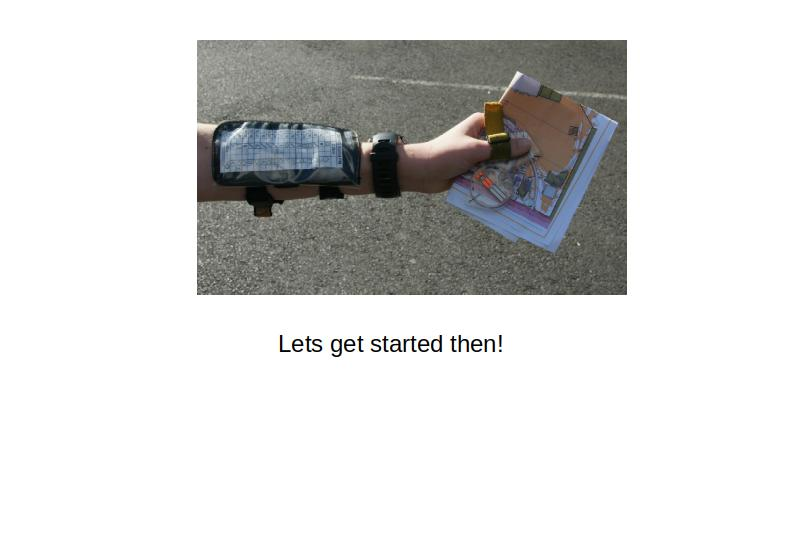

<!DOCTYPE html>
<html><head>
<meta http-equiv="content-type" content="text/html; charset=UTF-8">
    <title>Orienteering</title>
    <script src="js/jspsych.js"></script>
    <script src="js/plugins/jspsych-html-keyboard-response.js"></script>
    <script src="js/plugins/jspsych-external-html.js"></script>
    <script src="js/plugins/jspsych-instructions.js"></script>
    <link href="js/css/jspsych.css" rel="stylesheet" type="text/css"></link>
    <script src="http://code.jquery.com/jquery-1.11.0.min.js"></script>
  </head>
  <body></body>
  <script>
    
    
// #################  create timeline  #################
var timeline = [];  // The last thing we do is to run it!

// #################  create introduction screen  #################

    var introduction = {
      type:'external-html',
      url: "introduction_page.html",
      cont_btn: "next_b",
      };
    timeline.push(introduction);  // Into the timeline

// #################  create consent screen  #################

// Function that checks if a subject has given consent to participate.
// This stops execution of the rest of the timeline until the agreement checkbox is checked
var check_consent = function(elem) {
  if ($('#consent_checkbox').is(':checked')) {
    return true;
  }
  else {
    alert("If you wish to participate, you must check the box next to the statement 'I agree to participate in this study.'");
    return false;
  }
  return false;
};
 
// declare the block.
var consent = {
  type:'external-html',
  url: "consent_page.html",
  cont_btn: "start",
  check_fn: check_consent
};
timeline.push(consent);  // Into the timeline

// #################  create demographics screen  #################

// #################  create content screens  #################

    var instructions = 
    {
    type: 'instructions',
    pages: [
        '</img>',
        '</img>',
        '</img>',
        '</img>',
        '</img>'
    ],
    show_clickable_nav: true
    };
    timeline.push(instructions);

    // #################  create debrief screen  #################
    var debrief = 
    {
        type: 'html-keyboard-response',
        stimulus: 'just about done',
        choices: [' '],
        prompt: "<p>Press the space bar to end the experiment</p>"
    };
    timeline.push(debrief);

     // #################  create timeline  #################
    jsPsych.init
    ({
        timeline: timeline  // Oooh yes, now we run the time line
    });


   </script>
</html>